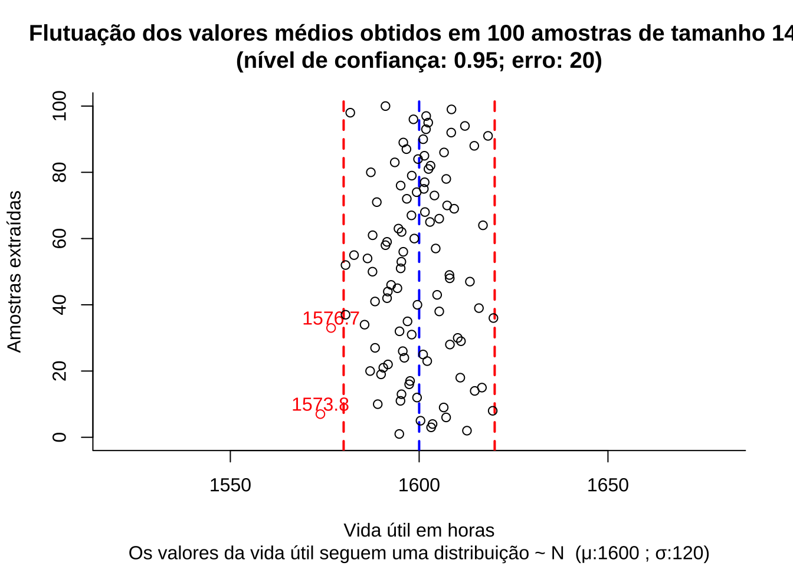

11.8 Teste de hipóteses para uma média \(\mu\)
11.8.1 Cenários possíveis
- variância populacional (\(\sigma^2\)) teoricamente conhecida;
- variância populacional (\(\sigma^2\)) desconhecida, mas o tamanho da amostra (\(n\)) é grande: \(n\ge 30\); e,
- variância populacional (\(\sigma\)) desconhecida e as amostras de tamanho (\(n\)) reduzido: \(n < 30\).
Estatística do teste para a primeira situação: variância populacional conhecida
\[
Z = \frac{\stackrel{-}{X} - \mu}{\frac{\sigma}{\sqrt{n}}} \sim \mathcal{N}(0,1)
\]
em que:
- \(\stackrel{-}{X}\) é a média observada na amostra;
- \(\mu\) o valor (desconhecido) inferido à média populacional, a ser testado frente à média amostral observada;
- \(\sigma\) é o desvio padrão populacional; e,
- \(n\) é o tamanho da amostra.
Estatística do teste para a segunda situação: variância populacional desconhecida mas amostras grandes: \(n\ge30(40)\): \(S\) pode ser tomado como estimativa de \(\sigma\):
\[ Z = \frac{\stackrel{-}{X} - \mu}{\frac{S}{\sqrt{n}}} \sim \mathcal{N}(0,1) \]
em que:
- \(\stackrel{-}{X}\) é a média observada na amostra;
- \(\mu\) o valor (desconhecido) inferido à média populacional a ser testado frente à média amostral observada;
- \(S\) é o desvio padrão amostral; e,
- \(n\) é o tamanho da amostra.
Estatística do teste para a terceira situação: variância populacional desconhecida e amostras pequenas: \(n<30\):
\[ T = \frac{(\stackrel{-}{X} - \mu)}{ \frac{S}{\sqrt{n}} } \sim t_{(n-1)} \]
em que:
- \(\stackrel{-}{X}\) é a média observada na amostra;
- \(\mu\) o valor (desconhecido) inferido à média populacional, a ser testado frente à média amostral;
- \(S\) é o desvio padrão amostral; e,
- \(n\) é o tamanho da amostra.
# Definição do eixo x
x <- seq(-4, 4, length.out = 100)
# Densidade da distribuição normal padrão
y_norm <- dnorm(x, mean = 0, sd = 1)
# Lista com diferentes graus de liberdade
df_list=c(1, 2, 4, 8, 20)
# Lista com cores para as curvas da distribuição t
colors=c("#097aeb", "#a37602", "#02a6f2", "#9635a1", "#16b533")
# Criação do data frame com todas as curvas
data=data.frame()
for (i in seq_along(df_list)) {
df = df_list[i]
y_t = dt(x, df)
df_data = data.frame(x, y_t, df)
data = rbind(data, df_data)
}
# Plotagem do gráfico
p = ggplot(data, aes(x = x)) +
geom_line(aes(y = y_t, color = factor(df)), size = 1) +
scale_color_manual(values = colors, name = "Graus de liberdade")+
ggtitle("Distribuição t sob diferentes graus de liberdade \ne sua aproximação à Normal padronizada)") +
xlab("Valores assumidos") +
ylab("Densidade") +
theme_classic() +
stat_function(fun = dnorm, args = list(mean = 0, sd = 1), color = "red", size=1.5, linetype='dashed')
print(p)
11.8.2 Roteiro geral
- identificar o modelo de probabilidade do estimador do parâmetro da população que se estuda;
- identificar a estatística apropriada para o teste em razão das informações disponíveis acerca da população, do tamanho da amostra e sua independência:
- escore médio;
- proporção;
- estatísticas T, Z, F, ou \(\chi\);
- determinar na curva de densidade de probabilidade do modelo da estatística de teste a(s) região(ões) crítica(s): faixa(s) de valores da estatística que nos levam à rejeição ou não da hipótese \(H_{0}\) em função do nível de significância previamente arbitrado pelo pesquisador \(\alpha\);
- calcular a estatística do teste apropriada para o parâmetro que se pretende inferir com base na amostra extraída;
- concluir com base nos resultados analisados: se o valor da estatística do teste pertence à(s) região(ões) crítica(s) de sua distribuição teórica, rejeitar \(H_{0}\); caso contrário não há evidências estatisticamente significativas para rejeitá-la.
11.8.3 Probabilidade dos intervalos de confiança para os testes de hipóteses com o uso da estatística Z (\(Z \sim \mathcal{N}(0,1)\)):
- Teste de hipóteses bilateral (tipo: diferente de):
\[\begin{align*} P[\left|Z_{calc}\right| \le {Z}_{tab\left(\frac{\alpha }{2}\right)}|\mu=\mu_{0}] & =(1-\alpha)\\ P(-{Z}_{tab\left(\frac{\alpha }{2}\right)} \le Z_{calc} \le {Z}_{tab\left(\frac{\alpha }{2}\right)}) & = (1-\alpha)\\ \end{align*}\]
- Teste de hipóteses unilateral à esquerda (tipo: menor que):
\[\begin{align*} P[Z_{calc} \ge -{Z}_{tab\left(\alpha \right)}|\mu \ge \mu_{0}] & =(1-\alpha) \\ P(Z_{calc} \ge -{Z}_{tab\left(\alpha \right)}) & =(1-\alpha)\\ \end{align*}\]
- Teste de hipóteses unilateral à direita (tipo maior que):
\[\begin{align*} P[Z_{calc} \le {Z}_{tab\left(\alpha \right)}|\mu \le \mu_{0}] & =(1-\alpha)\\ P(Z_{calc} \le {Z}_{tab\left(\alpha \right)}) & =(1-\alpha)\\ \end{align*}\]
11.8.4 Probabilidade dos intervalos de confiança para os testes de hipóteses com o uso da estatística T (\(T\sim t_{(n-1)}\)):
- Teste de hipóteses bilateral (tipo: diferente de):
\[\begin{align*} P[\left|t_{calc}\right| \ge {t}_{tab\left(\frac{\alpha }{2};n-1\right)}|\mu=\mu_{0}] & =(1-\alpha)\\ P(-{t}_{tab\left(\frac{\alpha }{2};n-1\right)} \le t_{calc} \le {t}_{tab\left(\frac{\alpha }{2};n-1\right)}) & =(1-\alpha) \end{align*}\]
- Teste de hipóteses unilateral à esquerda (tipo: menor que):
\[\begin{align*} P[t_{calc} \ge -{t}_{tab\left(\alpha \right)}|\mu \ge \mu_{0}] & =(1-\alpha)\\ P( t_{calc} \ge -{t}_{tab\left(\alpha;n-1\right)}) & = (1-\alpha) \end{align*}\]
- Teste de hipóteses unilateral à direita (tipo: maior que):
\[\begin{align*} P[t_{calc} \le {t}_{tab\left(\alpha \right)}|\mu \le \mu_{0}] & =(1-\alpha) \\ P( t_{calc} \le {t}_{tab\left(\alpha;n-1\right)} ) & = (1-\alpha) \end{align*}\]
Exemplo: O tempo de vida útil de uma amostra de 100 lâmpadas fluorescentes produzidas por uma fábrica foi calculado resultando em uma vida útil média de 1570 h sob um desvio padrão de 120 h. Seja \(\mu\) é o tempo de vida útil das lâmpadas produzidas pela empresa. Teste a hipótese de \(\mu=1600 h\) contra a hipótese alternativa de \(\mu \neq 1600 h\) sob um nível de significância \(\alpha=0,05\).
O problema nos pede um teste bilateral (tipo: diferente de):
\[ \begin{cases} H_{0}: \mu = 1.600\\ H_{1}: \mu \ne 1.600\\ \end{cases} \]
Iremos verificar se a informação amostral obtida nos permite rejeitar a hipótese nula que afirma ser a vida útil média das lâmpadas a 1.600 h., fazendo então valer a hipótese alternativa que afirma ser a vida útil das lâmpadas diferente de 1.600 h.
Pelo enunciado do problema a variância populacional \(\sigma^{2}\) é desconhecida mas, como a amostra é de grande tamanho (n=100) podemos tomar \(S\) como uma estimativa de \(\sigma\) e a estatística do teste fica definida como sendo:
\[ Z = \frac{\stackrel{-}{X} - \mu_{0}}{\frac{S}{\sqrt{n}}} \sim \mathcal{N}(0,1) \]
Extraindo os dados do problema:
- \(\stackrel{-}{X}=1570h\) é a média amostral;
- \(\mu_{0}=1600\) o valor (desconhecido) inferido à média populacional a ser testado frente à média amostral;
- \(S=120h\) é o desvio padrão amostral; e,
- \(n=100\) é o tamanho da amostra.
Calculando-se o valor da estatística do teste:
\[ z_{calc} = \frac{1570 - 1600}{\frac{120}{\sqrt{100}} } =-2,50 \]
Da tabela da distribuição Normal reduzida obtemos o valor crítico bicaudal: \(|{z}_{crit}|=1,96\). Pelo cálculo, a estatística do teste é \(z_{calc}=-2,50\).
alfa=0.05
prob_desejada1=alfa/2
z_desejado1=round(qnorm(prob_desejada1),4)
d_desejada1=dnorm(z_desejado1, 0, 1)
prob_desejada2=1-alfa/2
z_desejado2=round(qnorm(prob_desejada2),4)
d_desejada2=dnorm(z_desejado2, 0, 1)
z_calculado=-2.5
d_calculado=dnorm(z_calculado, 0, 1)
ggplot(NULL, aes(c(-4,4))) +
geom_area(stat = "function",
fun = dnorm,
fill = "red",
xlim = c(-4, z_desejado1),
colour="black") +
geom_area(stat = "function",
fun = dnorm,
fill = "lightgrey",
xlim = c(z_desejado1,0),
colour="black") +
geom_area(stat = "function",
fun = dnorm,
fill = "lightgrey",
xlim = c(0, z_desejado2),
colour="black") +
geom_area(stat = "function",
fun = dnorm,
fill = "red",
xlim = c(z_desejado2,4),
colour="black") +
scale_y_continuous(name="Densidade") +
scale_x_continuous(name="Valores de z", breaks = c(z_desejado1,z_desejado2)) +
labs(title=
"Regiões críticas sob a curva da função densidade da \ndistribuição apropriada ao teste",
subtitle = "P(-1,96, 1,96)=(1-\u03b1) em cinza (nível de confiança=0,95) \nP(-\U221e; -1,96)= P(1,96; \U221e)= \u03b1/2 em vermelho (nível de significância/2=0,025) ")+
geom_segment(aes(x = z_desejado1, y = 0, xend = z_desejado1, yend = d_desejada1), color="blue", lty=2, lwd=0.3)+
geom_segment(aes(x = z_desejado2, y = 0, xend = z_desejado2, yend = d_desejada2), color="blue", lty=2, lwd=0.3)+
annotate(geom="text", x=z_desejado1-0.1, y=d_desejada1, label="valor crítico=-1,96", angle=90, vjust=0, hjust=0, color="blue",size=3)+
annotate(geom="text", x=z_desejado2+0.3, y=d_desejada2, label="valor crítico=1,96", angle=90, vjust=0, hjust=0, color="blue",size=3)+
annotate(geom="text", x=z_desejado1-2, y=0.1, label="Região de rejeição da hipótese nula \nprobabilidade=\u03b1/2", angle=0, vjust=0, hjust=0, color="blue",size=3)+
annotate(geom="text", x=z_desejado2+0.5, y=0.1, label="Região de rejeição da hipótese nula \nprobabilidade=\u03b1/2", angle=0, vjust=0, hjust=0, color="blue",size=3)+
annotate(geom="text", x=z_desejado1+1.3, y=0.2, label="Região de não rejeição da hipótese nula \nprobabilidade= (1-\u03b1)", angle=0, vjust=0, hjust=0, color="blue",size=3)+
geom_segment(aes(x = z_calculado, y = 0, xend = z_calculado, yend = d_calculado), color="blue", lty=2, lwd=0.3)+
annotate(geom="text", x=z_calculado-0.1, y=d_calculado, label="valor da estatística do teste=-2,5", angle=90, vjust=0, hjust=0, color="blue",size=3)+
theme_bw()
Figure 11.11: Regiões de rejeição da hipótese nula para o teste bilateral (tipo: diferente de) realizado: a região de não rejeição da hipótese nula (região de não significância do teste) está delimitada pelos valores críticos da estatística do teste: \(z_{crit} =\pm 1,96\). O valor calculado da estatística (\(z_{calc}=-2,50\)) situa-se na faixa de significância do teste, possibilitando a rejeição da hipótese nula sob aquele nível de confiança
Conclusão: Os resultados obtidos na análise estatística realizada nos permitem rejeitar a hipótese de que a duração média populacional das lâmpadas seja igual a 1600h sob um nível de confiança de 95%. A vida útil média das lâmpadas é diferente de 1600h (Figura 11.11).
Podemos ainda realizar testes de hipóteses unilaterais (\(\mu<\mu_{0}\) ou \(\mu>\mu_{0}\)).
Teste unilateral à esquerda (tipo: menor que)
\[ \begin{cases} H_{0}: \mu \ge 1.600 \\ H_{1}: \mu < 1.600 \\ \end{cases} \]
Iremos verificar se a informação amostral obtida nos permite rejeitar a hipótese nula que afirma ser a vida útil média das lâmpadas igual ou superior a 1.600 h., fazendo então valer a hipótese alternativa que afirma ser a vida útil das lâmpadas menor que 1.600 h.
Da tabela da distribuição Normal reduzida obtemos o valor crítico monocaudal: \({z}_{crit}=-1,64\). Pelo cálculo, a estatística do teste é \(z_{calc}=-2,50\).
alfa=0.05
prob_desejada=alfa
z_desejado=round(qnorm(prob_desejada),4)
d_desejada=dnorm(z_desejado, 0, 1)
z_calculado=-2.5
d_calculado=dnorm(z_calculado, 0, 1)
ggplot(NULL, aes(c(-4,4))) +
geom_area(stat = "function",
fun = dnorm,
fill = "red",
xlim = c(-4, z_desejado),
colour="black") +
geom_area(stat = "function",
fun = dnorm,
fill = "lightgrey",
xlim = c(z_desejado,0),
colour="black") +
geom_area(stat = "function",
fun = dnorm,
fill = "lightgrey",
xlim = c(0, z_desejado),
colour="black") +
geom_area(stat = "function",
fun = dnorm,
fill = "lightgrey",
xlim = c(z_desejado,4),
colour="black") +
scale_y_continuous(name="Densidade") +
scale_x_continuous(name="Valores da estatística calculada para o teste") +
labs(title=
"Região crítica sob a curva da função densidade da \ndistribuição apropriada ao teste",
subtitle = "P( -1,64,\U221e,)=(1-\u03b1) em cinza (nível de confiança=0,95) \nP(-\U221e; -1,64)=\u03b1 em vermelho (nível de significância=0,05) ")+
geom_segment(aes(x = z_desejado, y = 0, xend = z_desejado, yend = d_desejada), color="blue", lty=2, lwd=0.3)+
annotate(geom="text", x=z_desejado-0.1, y=d_desejada, label="valor crítico=-1,64", angle=90, vjust=0, hjust=0, color="blue",size=3)+
annotate(geom="text", x=z_desejado-2.5, y=0.1, label="Região de rejeição da hipótese nula \nprobabilidade=\u03b1", angle=0, vjust=0, hjust=0, color="blue",size=3)+
annotate(geom="text", x=z_desejado+1, y=0.2, label="Região de não rejeição da hipótese nula \nprobabilidade= (1-\u03b1)", angle=0, vjust=0, hjust=0, color="blue",size=3)+
geom_segment(aes(x = z_calculado, y = 0, xend = z_calculado, yend = d_calculado), color="blue", lty=2, lwd=0.3)+
annotate(geom="text", x=z_calculado-0.1, y=d_calculado, label="valor da estatística do teste=-2,5", angle=90, vjust=0, hjust=0, color="blue",size=3)+
theme_bw()
Figure 11.12: Região de rejeição da hipótese nula para o teste unilateral à esquerda (tipo: menor que) realizado: a região de não rejeição da hipótese nula (região de não significância do teste) está delimitada pelo valor crítico da estatística do teste: \(z_{crit} = -1,64\). O valor calculado da estatística (\(z_{calc}=-2,50\)) situa-se na faixa de significância do teste, possibilitando a rejeição da hipótese nula sob aquele nível de confiança
Conclusão: Os resultados obtidos na análise estatística realizada nos permitem rejeitar a hipótese de que a duração média populacional das lâmpadas seja igual ou superior a 1600h sob um nível de confiança de 95%. A vida útil média é menor que 1600h (Figura 11.12).
Teste unilateral à direita (tipo: maior que)
\[ \begin{cases} H_{0}: \mu \le 1.600 \\ H_{1}: \mu > 1.600 \\ \end{cases} \]
Iremos verificar se a informação amostral obtida nos permite rejeitar a hipótese nula que afirma ser a vida útil média das lâmpadas igual ou inferior a 1.600 h., fazendo então valer a hipótese alternativa que afirma ser a vida útil das lâmpadas maior que 1.600 h.
Da tabela da distribuição Normal reduzida obtemos o valor crítico monocaudal: \({z}_{crit}=1,64\). Pelo cálculo, a estatística do teste é \(z_{calc}=-2,50\).
alfa=0.95
prob_desejada=alfa
z_desejado=round(qnorm(prob_desejada),4)
d_desejada=dnorm(z_desejado, 0, 1)
z_calculado=-2.5
d_calculado=dnorm(z_calculado, 0, 1)
ggplot(NULL, aes(c(-4,4))) +
geom_area(stat = "function",
fun = dnorm,
fill = "lightgrey",
xlim = c(-4, z_desejado),
colour="black") +
geom_area(stat = "function",
fun = dnorm,
fill = "red",
xlim = c(z_desejado,4),
colour="black") +
scale_y_continuous(name="Densidade") +
scale_x_continuous(name="Valores da estatística calculada para o teste") +
labs(title=
"Região crítica sob a curva da função densidade da \ndistribuição apropriada ao teste",
subtitle = "P( -1,96,\U221e,)=(1-\u03b1) em cinza (nível de confiança=0,95) \nP(-\U221e; -1,96)=\u03b1 em vermelho (nível de significância=0,05) ")+
geom_segment(aes(x = z_desejado, y = 0, xend = z_desejado, yend = d_desejada), color="blue", lty=2, lwd=0.3)+
annotate(geom="text", x=z_desejado-0.1, y=d_desejada, label="valor crítico=-1,64", angle=90, vjust=0, hjust=0, color="blue",size=3)+
annotate(geom="text", x=z_desejado+1, y=0.1, label="Região de rejeição da hipótese nula \nprobabilidade=\u03b1", angle=0, vjust=0, hjust=0, color="blue",size=3)+
annotate(geom="text", x=z_desejado-2.5, y=0.2, label="Região de não rejeição da hipótese nula \nprobabilidade= (1-\u03b1)", angle=0, vjust=0, hjust=0, color="blue",size=3)+
geom_segment(aes(x = z_calculado, y = 0, xend = z_calculado, yend = d_calculado), color="blue", lty=2, lwd=0.3)+
annotate(geom="text", x=z_calculado-0.1, y=d_calculado, label="valor da estatística do teste=-2,5", angle=90, vjust=0, hjust=0, color="blue",size=3)+
theme_bw()
Figure 11.13: Região de rejeição da hipótese nula para o teste unilateral à direita (tipo: maior que) realizado: a região de não rejeição da hipótese nula (região de não significância do teste) está delimitada pelo valor crítico da estatística do teste: \(z_{crit} = 1,64\). O valor calculado da estatística (\(z_{calc}=-2,50\)) situa-se na faixa de não significância do teste, não possibilitando a rejeição da hipótese nula sob aquele nível de confiança
Conclusão: Os resultados obtidos na análise estatística realizada não nos permitem rejeitar a hipótese de que a duração média populacional das lâmpadas seja igual ou inferior a 1600h sob um nível de confiança de 95%. A vida útil média é maior que 1600h (Figura 11.12).
Exemplo: De um universo Normal com parâmetros média e variância (\(\mu\) e \(\sigma^{2}\)) desconhecidos, retirou-se uma amostra aleatória composta por 9 observações que apresentou as seguintes sínteses numéricas: \(\stackrel{-}{X} = 4\) e \(S^{2} = 2,2\). Proceda ao seguinte teste de hipóteses, a um nível de significância: \(\alpha=0,05\), de que a média populacional é igual a 5.
O problema nos pede um teste bilateral (tipo: diferente de):
\[ \begin{cases} H_{0}: \mu = 5\\ H_{1}: \mu \ne 5\\ \end{cases} \]
Iremos verificar se a informação amostral obtida nos permite rejeitar a hipótese nula que afirma ser a média igual a 5, fazendo então valer a hipótese alternativa que afirma ser a média diferente de 5.
Pelo enunciado do problema a variância populacional \(\sigma^{2}\) é desconhecida e a amostra é pequena (n=9). Nessa situação, a estatística do teste fica definida como sendo:
\[ T = \frac{(\stackrel{-}{X} - \mu_{0})}{ \frac{s}{\sqrt{n}} } \sim t_{(n-1)} \]
Extraindo os dados do problema:
- \(\stackrel{-}{x}=4\) é a média amostral;
- \(\mu_{0}=5\) o valor (desconhecido) inferido à média populacional, a ser testado frente à média amostral;
- \(s = \sqrt{2,2}=1,48\) é o desvio padrão da amostra extraída;
- \(n = 9\) é o tamanho da amostra extraída;
Calculando-se o valor da estatística do teste:
\[ t_{calc} = \frac{(\stackrel{-}{X} - \mu_{0})}{ \frac{s}{\sqrt{n}} } = -2,02 \]
Da tabela ``t’’ de Student obtemos o valor crítico bicaudal: \(|{t}_{tab\left(\frac{\alpha }{2}\right), (n-1)}|=2,306\). Pelo cálculo a estatística do teste é \(t_{calc}=-2,02\).
alfa=0.05
prob_desejada1=alfa/2
df=8
t_desejado1=round(qt(prob_desejada1,df ),df)
d_desejada1=dt(t_desejado1,df)
prob_desejada2=1-alfa/2
df=8
t_desejado2=round(qt(prob_desejada2, df),df)
d_desejada2=dt(t_desejado2,df)
t_calculado=-2
d_calculado=dt(t_calculado,df)
ggplot(NULL, aes(c(-4,4))) +
geom_area(stat = "function",
fun = dt,
args=list(df),
fill = "red",
xlim = c(-4, t_desejado1),
colour="black") +
geom_area(stat = "function",
fun = dt,
args=list(df),
fill = "lightgrey",
xlim = c(t_desejado1,0),
colour="black") +
geom_area(stat = "function",
fun = dt,
args=list(df),
fill = "lightgrey",
xlim = c(0, t_desejado2),
colour="black") +
geom_area(stat = "function",
fun = dt,
args=list(df),
fill = "red",
xlim = c(t_desejado2,4),
colour="black") +
scale_y_continuous(name="Densidade") +
scale_x_continuous(name="Valores de t", breaks = c(t_desejado1, t_desejado2)) +
labs(title=
"Regiões críticas sob a curva da função densidade da \ndistribuição apropriada ao teste",
subtitle = "P(-2,306, 2,306)=(1-\u03b1) em cinza (nível de confiança=0,95) \nP(-\U221e; -2,306)= P(2,306; \U221e)= \u03b1/2 em vermelho (nível de significância/2=0,025) ")+ geom_segment(aes(x = t_desejado1, y = 0, xend = t_desejado1, yend = d_desejada1), color="blue", lty=2, lwd=0.3)+
geom_segment(aes(x = t_desejado2, y = 0, xend = t_desejado2, yend = d_desejada2), color="blue", lty=2, lwd=0.3)+
annotate(geom="text", x=t_desejado1-0.1, y=d_desejada1, label="valor crítico=-2,306", angle=90, vjust=0, hjust=0, color="blue",size=3)+
annotate(geom="text", x=t_desejado2+0.3, y=d_desejada2, label="valor crítico=2,306", angle=90, vjust=0, hjust=0, color="blue",size=3)+
annotate(geom="text", x=t_desejado1-2, y=0.1, label="Região de rejeição da hipótese nula \nprobabilidade=\u03b1/2", angle=0, vjust=0, hjust=0, color="blue",size=3)+
annotate(geom="text", x=t_desejado2+0.5, y=0.1, label="Região de rejeição da hipótese nula \nprobabilidade=\u03b1/2", angle=0, vjust=0, hjust=0, color="blue",size=3)+
annotate(geom="text", x=t_desejado1+2, y=0.2, label="Região de não rejeição da hipótese nula \nprobabilidade= (1-\u03b1)", angle=0, vjust=0, hjust=0, color="blue",size=3)+
geom_segment(aes(x = t_calculado, y = 0, xend = t_calculado, yend = d_calculado), color="blue", lty=2, lwd=0.3)+
annotate(geom="text", x=t_calculado-0.1, y=d_calculado, label="valor da estatística do teste=-2.02", angle=90, vjust=0, hjust=0, color="blue",size=3)+
theme_bw()Figure 11.14: Regiões de rejeição da hipótese nula para o teste bilateral (tipo: diferente de) realizado: a região de não rejeição da hipótese nula (região de não significância do teste) está delimitada pelos valores críticos da estatística do teste: \(t_{crit} =\pm 2,306\). O valor calculado da estatística (\(t_{calc}=-2,02\)) situa-se na faixa de significância do teste, possibilitando a rejeição da hipótese nula sob aquele nível de confiança
Conclusão: Os resultados obtidos na análise estatística realizada não nos permitem rejeitar a hipótese de que a média populacional seja igual a 5 sob um nível de confiança de 95% (Figura 11.14).
# Dados do problema
n=9
media_amostral=4
var_amostral=2.2
media_populacao=5
alfa=0.05
# Estatística de teste
t=(media_amostral - media_populacao) / sqrt(var_amostral / n)
# Graus de liberdade
df=n - 1
# Valor-p à esquerda
p_valor_1=pt(-abs(t), df, lower.tail = TRUE)
# Valor-p à direita
p_valor_2=pt(abs(t), df, lower.tail = FALSE)
# p-valor
p_valor=p_valor_1+p_valor_2
# Ou
p_valor <- 2 * pt(-abs(t), df)
# Decisão e conclusão
if (p_valor < alfa) {
cat("Os dados amostrais trazidos à análise nos permitem rejeitar, sob o nível de significância estabelecido de", alfa ,"de se cometer um erro do tipo I, a hipótese nula (H0) que afirma ser a média populacional igual a", media_populacao,".A média populacional é diferente.")
} else {
cat("Os dados amostrais trazidos à análise não nos permitem rejeitar, sob o nível de confiança de", 1-alfa ,",a hipótese nula (H0). A média populacional é igual a", media_populacao,".")
}## Os dados amostrais trazidos à análise não nos permitem rejeitar, sob o nível de confiança de 0.95 ,a hipótese nula (H0). A média populacional é igual a 5 .
> Teste unilateral à esquerda (tipo: menor que)
\[ \begin{cases} H_{0}: \mu \ge 5\\ H_{1}: \mu < 5\\ \end{cases} \]
Iremos verificar se a informação amostral obtida nos permite rejeitar a hipótese nula que afirma ser a média igual ou maior a 5, fazendo então valer a hipótese alternativa que afirma ser a média menor que 5.
Da tabela ``t’’ de Student obtemos o valor crítico monocaudal: \(|{t}_{tab_(\alpha, (n-1))}|=-1,86\). Pelo cálculo a estatística do teste é \(t_{calc}=-2,02\).
alfa=0.05
prob_desejada=alfa
df=8
t_desejado=round(qt(prob_desejada,df ),4)
d_desejada=dt(t_desejado,df)
t_calculado=-2
d_calculado=dt(t_calculado,df)
ggplot(NULL, aes(c(-4,4))) +
geom_area(stat = "function",
fun = dt,
args=list(df),
fill = "red",
xlim = c(-4, t_desejado),
colour="black") +
geom_area(stat = "function",
fun = dt,
args=list(df),
fill = "lightgrey",
xlim = c(t_desejado,4),
colour="black") +
scale_y_continuous(name="Densidade") +
scale_x_continuous(name="Valores de t", breaks = c(t_desejado)) +
labs(title=
"Regiões críticas sob a curva da função densidade da \ndistribuição apropriada ao teste",
subtitle = "P(-1,86, \U221e)=(1-\u03b1) em cinza (nível de confiança=0,95) \nP(-\U221e; -1,86)= \u03b1 em vermelho (nível de significância=0,05) ")+
geom_segment(aes(x = t_desejado, y = 0, xend = t_desejado, yend = d_desejada), color="blue", lty=2, lwd=0.3)+
annotate(geom="text", x=t_desejado-0.1, y=d_desejada, label="valor crítico=-1,86", angle=90, vjust=0, hjust=0, color="blue",size=3)+
annotate(geom="text", x=t_desejado-2, y=0.1, label="Região de rejeição da hipótese nula \nprobabilidade=\u03b1", angle=0, vjust=0, hjust=0, color="blue",size=3)+
annotate(geom="text", x=t_desejado+1.5, y=0.2, label="Região de não rejeição da hipótese nula \nprobabilidade= (1-\u03b1)", angle=0, vjust=0, hjust=0, color="blue",size=3)+
geom_segment(aes(x = t_calculado, y = 0, xend = t_calculado, yend = d_calculado), color="blue", lty=2, lwd=0.3)+
annotate(geom="text", x=t_calculado-0.1, y=d_calculado, label="valor da estatística do teste=-2.02", angle=90, vjust=0, hjust=0, color="blue",size=3)+
theme_bw()
Figure 11.15: Região de rejeição da hipótese nula para o teste unilateral à esquerda (tipo: menor que) realizado: a região de não rejeição da hipótese nula (região de não significância do teste) está delimitada pelo valor crítico da estatística do teste: \(t_{crit} = -1,86\). O valor calculado da estatística (\(t_{calc}=-2,02\)) situa-se na faixa de significância do teste possibilitando a rejeição da hipótese nula sob aquele nível de confiança
Conclusão: sob um nível de confiança de confiança de 95%, face aos dados trazidos à análise podemos rejeitar a hipótese de que a média seja de no mínimo a 5 (Figura 11.15).
Caso estabelecêssemos um nível de confiança \((1-\alpha) \ge 0,9611277\) (ou tivéssemos uma informação amostral \(\stackrel{-}{x} \ge 4.080639\)), a hipótese nula não seria rejeitada: a média populacional é maior ou igual a 5.
# Dados do problema
n=9
media_amostral=4
var_amostral=2.2
media_populacao=5
alfa=0.05
# Estatística de teste
t=(media_amostral - media_populacao) / sqrt(var_amostral / n)
# Graus de liberdade
df=n - 1
# Valor-p à esquerda
p_valor=pt(t, df)
# Decisão e conclusão
if (p_valor < alfa) {
cat("Os dados amostrais trazidos à análise nos permitem rejeitar, sob o nível de significância estabelecido de", alfa ,"de se cometer um erro do tipo I, a hipótese nula (H0) que afirma ser a média populacional maior ou igual a ", media_populacao,".A média populacional é menor.")
} else {
cat("Os dados amostrais trazidos à análise não nos permitem rejeitar, sob o nível de confiança de", 1-alfa ,",a hipótese nula (H0). A média populacional é maior ou igual a", media_populacao,".")
}## Os dados amostrais trazidos à análise nos permitem rejeitar, sob o nível de significância estabelecido de 0.05 de se cometer um erro do tipo I, a hipótese nula (H0) que afirma ser a média populacional maior ou igual a 5 .A média populacional é menor.
Teste unilateral à direita (tipo: maior que)
\[ \begin{cases} H_{0}: \mu \le 5\\ H_{1}: \mu > 5\\ \end{cases} \]
Iremos verificar se a informação amostral obtida nos permite rejeitar a hipótese nula que afirma ser a média igual ou menor a 5, fazendo então valer a hipótese alternativa que afirma ser a média maior que 5.
Da tabela ``t’’ de Student obtemos o valor crítico monocaudal: \(|{t}_{tab_(\alpha, (n-1))}|=1,86\). Pelo cálculo a estatística do teste é \(t_{calc}=-2,02\).
alfa=0.95
prob_desejada=alfa
df=8
t_desejado=round(qt(prob_desejada,df ),4)
d_desejada=dt(t_desejado,df)
t_calculado=-2
d_calculado=dt(t_calculado,df)
ggplot(NULL, aes(c(-4,4))) +
geom_area(stat = "function",
fun = dt,
args=list(df),
fill = "lightgrey",
xlim = c(-4, t_desejado),
colour="black") +
geom_area(stat = "function",
fun = dt,
args=list(df),
fill = "red",
xlim = c(t_desejado,4),
colour="black") +
scale_y_continuous(name="Densidade") +
scale_x_continuous(name="Valores de t", breaks = c(t_desejado)) +
labs(title=
"Regiões críticas sob a curva da função densidade da \ndistribuição apropriada ao teste",
subtitle = "P(-\U221e; 1,86)=(1-\u03b1) em cinza (nível de confiança=0,95) \nP(1,86; \U221e)= \u03b1 em vermelho (nível de significância=0,05) ")+
geom_segment(aes(x = t_desejado, y = 0, xend = t_desejado, yend = d_desejada), color="blue", lty=2, lwd=0.3)+
annotate(geom="text", x=t_desejado-3, y=0.1, label="Região de não rejeição da hipótese nula \nprobabilidade=\u03b1", angle=0, vjust=0, hjust=0, color="blue",size=3)+
annotate(geom="text", x=t_desejado, y=0.1, label="Região de rejeição da hipótese nula \nprobabilidade= (1-\u03b1)", angle=0, vjust=0, hjust=0, color="blue",size=3)+
geom_segment(aes(x = t_calculado, y = 0, xend = t_calculado, yend = d_calculado), color="blue", lty=2, lwd=0.3)+
annotate(geom="text", x=t_calculado-0.1, y=d_calculado, label="valor da estatística do teste=-2.02", angle=90, vjust=0, hjust=0, color="blue",size=3)+
theme_bw()
Figure 11.16: Região de rejeição da hipótese nula para o teste unilateral à direita (tipo: maior que) realizado: a região de não rejeição da hipótese nula (região de não significância do teste) está delimitada pelo valor crítico da estatística do teste: \(t_{crit} = 1,86\). O valor calculado da estatística (\(t_{calc}=-2,02\)) situa-se na faixa de não significância do teste, não possibilitando a rejeição da hipótese nula sob aquele nível de confiança
Conclusão: sob um nível de confiança de confiança de 95%, face aos dados trazidos à análise não podemos rejeitar a hipótese de que a média seja inferior a 5 (Figura 11.16).
Caso estabelecêssemos um nível de confiança \((1-\alpha) \ge 0,9611277\) (ou tivéssemos uma informação amostral \(\stackrel{-}{x} \ge 5.919361\)), a hipótese nula seria rejeitada: a média populacional é maior que 5.
# Dados do problema
n=9
media_amostral=4
var_amostral=2.2
media_populacao=5
alfa=0.95
# Estatística de teste
t=(media_amostral - media_populacao) / sqrt(var_amostral / n)
# Graus de liberdade
df=n - 1
# Valor-p à direita
p_valor=pt(-t, df)
# Decisão e conclusão
if (p_valor < alfa) {
cat("Os dados amostrais trazidos à análise nos permitem rejeitar, sob o nível de significância estabelecido de", alfa ,"de se cometer um erro do tipo I, a hipótese nula (H0) que afirma ser a média populacional menor ou igual a", media_populacao,".A média populacional é maior que",media_populacao,"." )
} else {
cat("Os dados amostrais trazidos à análise não nos permitem rejeitar, sob o nível de confiança de", 1-alfa ,",a hipótese nula (H0). A média populacional é menor ou igual a", media_populacao,".")
}## Os dados amostrais trazidos à análise não nos permitem rejeitar, sob o nível de confiança de 0.05 ,a hipótese nula (H0). A média populacional é menor ou igual a 5 .